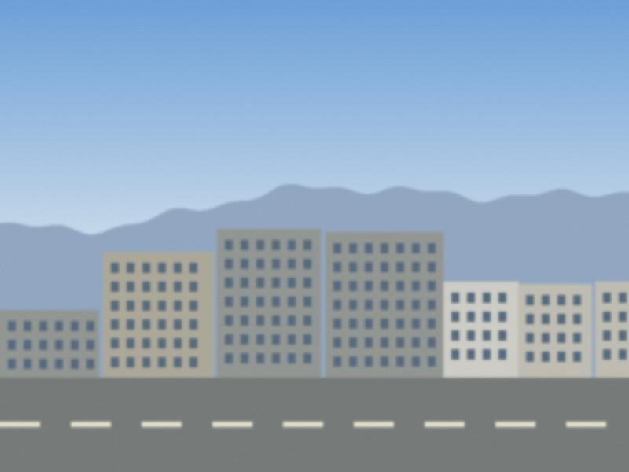
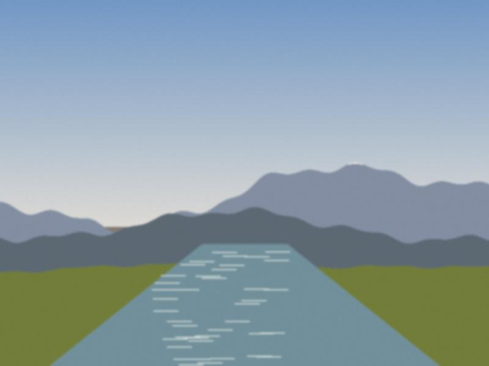

In the Old City of Talas the moncho has stood for two centuries. Its attendant has never taken a bath there.

In Tash-Kömür, the coal town below Iyık Janyl, the first frost is announced by a smell. The men who deliver it say they never have a day off in winter.
A small town where the Talas leaves its valley, a mausoleum with a green dome, and an old man who has locked and unlocked its door every morning since 1971.

Murat Alibekov photographed the weddings of two generations of Talas. He will tell you which family is still angry about which photo.
In every block of flats in Nurzhan someone keeps the heat on. A night with the stokers of a district boiler house.
In the Iradi Telegraph Office in the Old City, Raisa Kuznetsova still takes down every word by hand. Fifty telegrams a day, most of them about weddings and funerals.